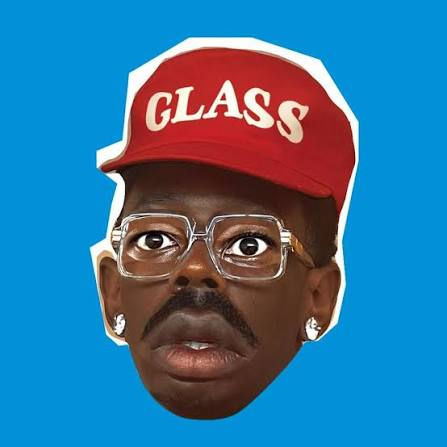
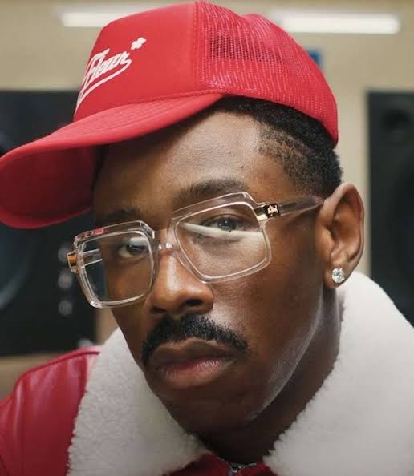

Quem é Tyler, The Creator?


ㅤㅤㅤTyler, The Creator, cujo nome de nascimento é Tyler Gregory Okonma, é um rapper, cantor, compositor, produtor musical e designer norte-americano. Ele nasceu em 6 de março de 1991, em Ladera Heights, Califórnia, Estados Unidos. Conhecido por sua criatividade multifacetada, Tyler é uma figura marcante na música contemporânea e na cultura pop.
Carreira Musical
ㅤㅤㅤTyler começou sua carreira em 2007, fundando o coletivo musical Odd Future Wolf Gang Kill Them All (OFWGKTA). Ele lançou seu primeiro mixtape, "Bastard", em 2009, ganhando atenção com letras intensas e beats originais.
Álbuns notáveis incluem:
- "Goblin" (2011): Inclui o hit "Yonkers", marcando sua ascensão ao estrelato.
- "Wolf" (2013): Um álbum introspectivo que mostrou seu crescimento como artista.
- "Cherry Bomb" (2015): Experimental, com influências de jazz e soul.
- "Flower Boy" (2017): Aclamado pela crítica, trouxe um lado mais emocional e vulnerável.
- "IGOR" (2019): Vencedor do Grammy de Melhor Álbum de Rap, misturando gêneros.
- "Call Me If You Get Lost" (2021): Outro álbum vencedor do Grammy.
- "CHROMAKOPIA" (2024): Um álbum conceitual e introspectivo, onde podemos conhecer o verdadeiro Tyler.
- "DON'T TAP THE GLASS" (2025): Último álbum lançado até então.
Moda e Design
ㅤㅤㅤAlém da música, Tyler é o fundador da marca de roupas Golf Wang e da linha de sapatos Golf le Fleur, conhecidas por seus designs inovadores e cores vibrantes.
Influências e Legado
ㅤㅤㅤTyler é amplamente reconhecido por quebrar barreiras na música e desafiar normas de gênero e identidade. Suas influências incluem artistas como Pharrell Williams e grupos de jazz e soul.
Vida Pessoal
ㅤㅤㅤTyler mantém sua vida pessoal em grande parte privada, embora aborde temas de identidade e sexualidade em sua música. Ele é conhecido por sua personalidade carismática e paixão por carros vintage e design.